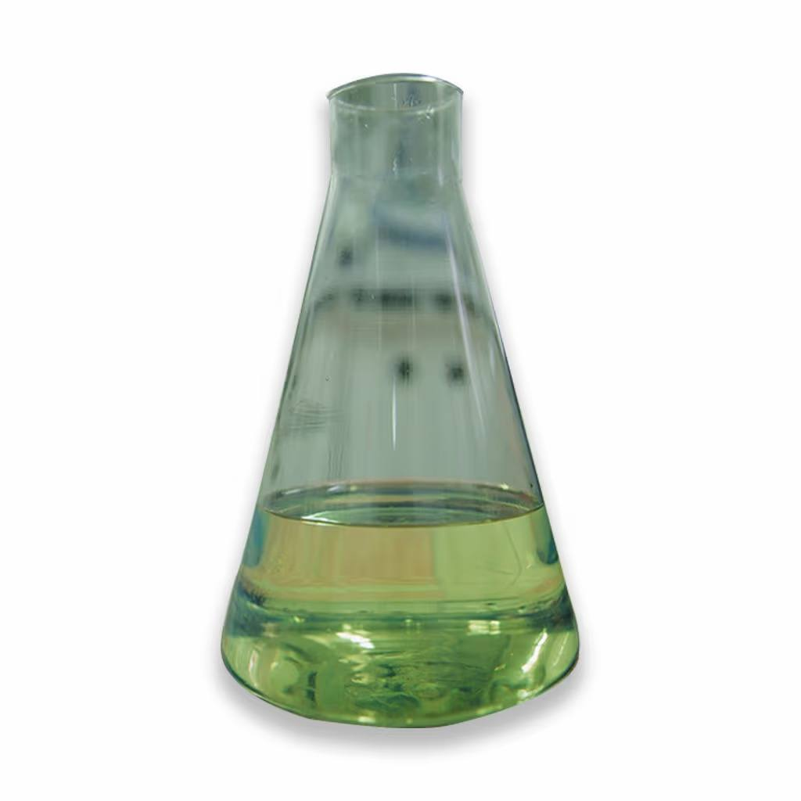

Авиационный керосин марки ТС-1 — это высококачественное топливо, предназначенное для использования в газотурбинных двигателях самолетов. Обладает отличными эксплуатационными характеристиками, высокой чистотой и стабильностью при хранении.
← Вернуться в каталог